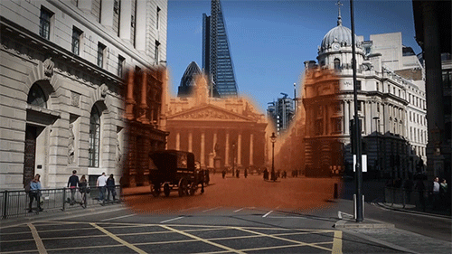
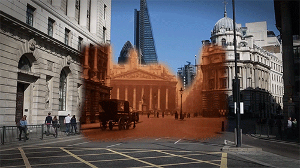
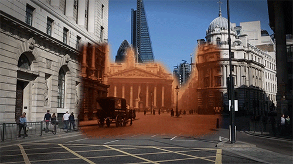
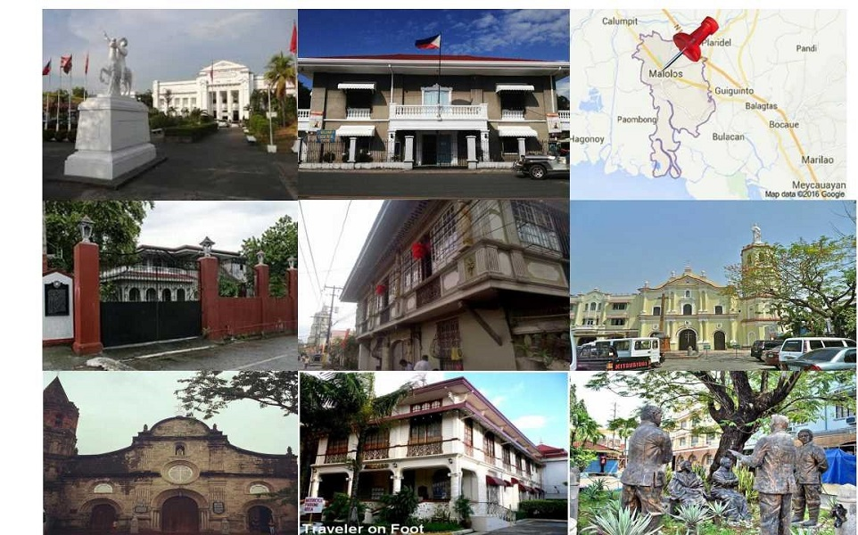

Malolos
known as �The Cradle of the Philippine Republic�. Malolos City is a first class urban component city in the Philippines. It is considered as the 115th city in the country. It is also the capital city of the province of Bulacan. It is derived from the Tagalog word �Paluslos�, meaning � downwards�. The name resulted from a misunderstanding among the first Spanish missionaries who reached the place.

